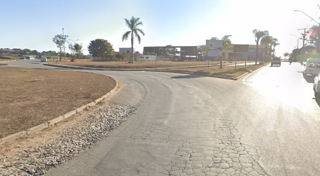
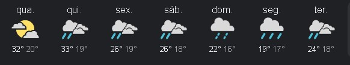

Confira a gravação feita por um dos moradores:
Foi um dos piores desastres que o bairro ja sofreu. A enxente deixou diversas pessoas desabrigadas e algumas feridas.
Confira maisConfira a gravação feita por um dos moradores:
Foi um dos piores desastres que o bairro ja sofreu. A enxente deixou diversas pessoas desabrigadas e algumas feridas.
Confira maisDepois de muita luta a associação do bairro conseguiu o que buscava! Asfaltar uma de suas principais entradas.
Os moradores acreditam que isso ira fortalecer o comercio na região e atrair novos moradores.
O calor ultimamente está grande. Juatuba está batendo recordes de temperatura esse mês. Mas segundo a previsão de vários meteorologistas esse resto de semana sera de bastante chuva, com dias nublados e tempestades durante a noite.
